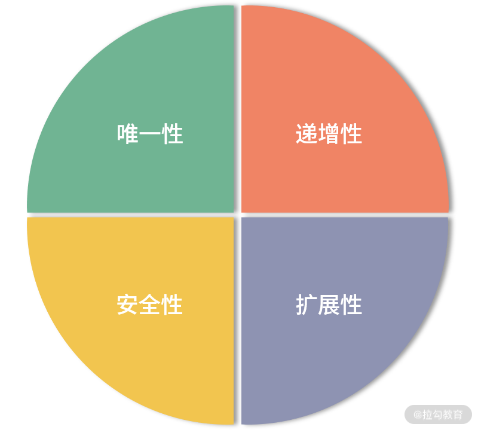
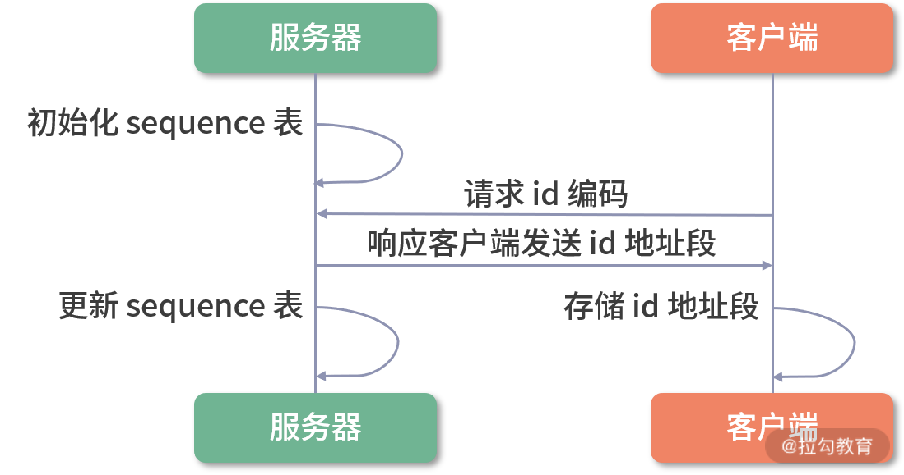
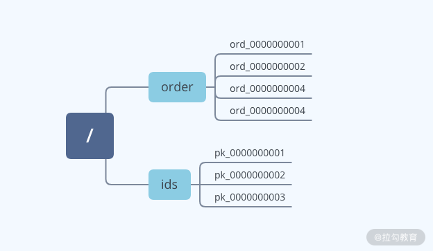
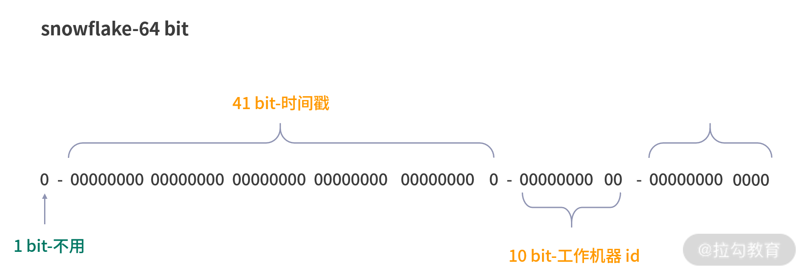

- 00 开篇词：选择 ZooKeeper，一步到位掌握分布式开发.md.html
- 01 ZooKeeper 数据模型：节点的特性与应用.md.html
- 02 发布订阅模式：如何使用 Watch 机制实现分布式通知.md.html
- 03 ACL 权限控制：如何避免未经授权的访问？.md.html
- 04 ZooKeeper 如何进行序列化？.md.html
- 05 深入分析 Jute 的底层实现原理.md.html
- 06 ZooKeeper 的网络通信协议详解.md.html
- 07 单机模式：服务器如何从初始化到对外提供服务？.md.html
- 08 集群模式：服务器如何从初始化到对外提供服务？.md.html
- 09 创建会话：避开日常开发的那些“坑”.md.html
- 10 ClientCnxn：客户端核心工作类工作原理解析.md.html
- 11 分桶策略：如何实现高效的会话管理？.md.html
- 12 服务端是如何处理一次会话请求的？.md.html
- 13 Curator：如何降低 ZooKeeper 使用的复杂性？.md.html
- 14 Leader 选举：如何保证分布式数据的一致性？.md.html
- 15 ZooKeeper 究竟是怎么选中 Leader 的？.md.html
- 16 ZooKeeper 集群中 Leader 与 Follower 的数据同步策略.md.html
- 17 集群中 Leader 的作用：事务的请求处理与调度分析.md.html
- 18 集群中 Follow 的作用：非事务请求的处理与 Leader 的选举分析.md.html
- 19 Observer 的作用与 Follow 有哪些不同？.md.html
- 20 一个运行中的 ZooKeeper 服务会产生哪些数据和文件？.md.html
- 21 ZooKeeper 分布式锁：实现和原理解析.md.html
- 22 基于 ZooKeeper 命名服务的应用：分布式 ID 生成器.md.html
- 23 使用 ZooKeeper 实现负载均衡服务器功能.md.html
- 24 ZooKeeper 在 Kafka 和 Dubbo 中的工业级实现案例分析.md.html
- 25 如何搭建一个高可用的 ZooKeeper 生产环境？.md.html
- 26 JConsole 与四字母命令：如何监控服务器上 ZooKeeper 的运行状态？.md.html
- 27 crontab 与 PurgeTxnLog：线上系统日志清理的最佳时间和方式.md.html
- 28 彻底掌握二阶段提交三阶段提交算法原理.md.html
- 29 ZAB 协议算法：崩溃恢复和消息广播.md.html
- 30 ZAB 与 Paxos 算法的联系与区别.md.html
- 31 ZooKeeper 中二阶段提交算法的实现分析.md.html
- 32 ZooKeeper 数据存储底层实现解析.md.html
- 33 结束语 分布技术发展与 ZooKeeper 应用前景.md.html
22 基于 ZooKeeper 命名服务的应用：分布式 ID 生成器
在上个课时中，我们讲解了如何利用 ZooKeeper 实现一个分布式锁，并解决在分布式环境下，网络中多线程之间的事务问题。今天我们利用 ZooKeeper 来解决分布式系统环境的另一个实际应用场景：使用 ZooKeeper 实现一个分布式 ID 生成器。
无论是单机环境还是分布式环境，都有使用唯一标识符标记某一资源的使用场景。比如在淘宝、京东等购物网站下单时，系统会自动生成订单编号，这个订单编号就是一个分布式 ID 的使用。
什么是 ID 生成器
我们先来介绍一下什么是 ID 生成器。分布式 ID 生成器就是通过分布式的方式，实现自动生成分配 ID 编码的程序或服务。在日常开发中，Java 语言中的 UUID 就是生成一个 32 位的 ID 编码生成器。根据日常使用场景，我们生成的 ID 编码一般具有唯一性、递增性、安全性、扩展性这几个特性。

唯一性：ID 编码作为标记分布式系统重要资源的标识符，在整个分布式系统环境下，生成的 ID 编码应该具有全局唯一的特性。如果产生两个重复的 ID 编码，就无法通过 ID 编码准确找到对应的资源，这也是一个 ID 编码最基本的要求。
递增性：递增性也可以说是 ID 编码的有序特性，它指一般的 ID 编码具有一定的顺序规则。比如 MySQL 数据表主键 ID，一般是一个递增的整数数字，按逐条加一的方式顺序增大。我们现在学习的 ZooKeeper 系统的 zxID 也具有递增的特性，这样在投票阶段就可以根据 zxID 的有序特性，对投票信息进行比对。
安全性：有的业务场景对 ID 的安全性有很高的要求，但这里说的安全性是指，如果按照递增的方式生成 ID 编码，那么这种规律很容易被发现。比如淘宝的订单编码，如果被恶意的生成或使用，会严重影响系统的安全性，所以 ID 编码必须保证其安全性。
扩展性：该特性是指 ID 编码规则要有一定的扩展性，按照规则生成的编码资源应该满足业务的要求。还是拿淘宝订单编码为例，假设淘宝订单的 ID 生成规则是：随机产生 4 位有效的整数组成编码，那么最多可以生成 6561 个订单编码，这显然是无法满足淘宝系统需求的。所以在设计 ID 编码的时候，要充分考虑扩展的需要，比如编码规则能够生成足够多的 ID，从而满足业务的要求，或者能够通过不同的前缀区分不同的产品或业务线 。
生成策略
UUID 方式
介绍完 ID 编码在整个应用系统的重要作用和 ID 编码自身的特性后。接下来我们看看几种在日常开发中常见的生成策略。
开发人员，尤其是 Java 程序员最为熟悉的编码生成方式就是 UUID。它是一种包含 16 个字节的数字编码。 UUID 会根据运行应用的计算机网卡 MAC 地址、时间戳、命令空间等元素，通过一定的随机算法产生。正因为 UUID 算法元素的复杂性，保证了 UUID 在一定范围内的随机性。
UUID 在本地应用中生成，速度比较快，不依赖于其他服务，网络的好坏对其没有任何影响。但从实现上来讲，使用 UUID 策略生成的代码耦合度大，不能作为单独的 ID 生成器使用。而且生成的编码不能满足递增的特性，没有任何有序性可言，在很多业务场景中都不合适。
数据库序列方式
生成 ID 编码的另一种方式是数据库序列。比如 MySQL 的自增主键就是一种有序的 ID 生成方式。随着数据变得越来越多，为了提升数据库的性能，就要对数据库进行分库分表等操作。在这种情况下，自增主键的方式不能满足系统处理海量数据的要求。
这里我给你介绍另一种性能更好的数据库序列生成方式：TDDL 中的序列化实现。TDDL 是 Taobao Distributed Data Layer 的缩写。是淘宝根据自己的业务特点开发的数据库中间件。主要应用于数据库分库分表的应用场景中。
TDDL 生成 ID 编码的大致过程如下图所示。首先，作为 ID 生成器的机器，数据库中会存在一张sequence 序列化表，用于记录当前已经被占用的 ID 最大值。之后每个需要 ID 编码的客户端在请求 ID 编码生成器后，编码服务器会返回给该客户端一段 ID 地址区间。并更新 sequence 表中的信息。

在接收一段 ID 编码后，客户端会将该编码存储在内存中。在本机需要使用 ID 编码时，会首先使用内存中的 ID 编码。如果内存中的 ID 编码已经完全被占用，则再重新向编码服务器获取。
在 TDDL 框架的内部实现中，通过分批获取 ID 编码的方式，减少了客户端访问服务器的频率，避免了网络波动所造成的影响，并减轻了服务器的内存压力。不过 TDDL 是高度依赖底层数据库的实现方式，不能作为一个独立的分布式 ID 生成器对外提供服务。
实现方式
上面介绍的几种策略，有的和底层编码耦合比较大，有的又局限在某一具体的使用场景下，并不满足作为分布式环境下一个公共 ID 生成器的要求。接下来我们就利用目前学到的 ZooKeeper 知识，动手实现一个真正的分布式 ID 生成器。
首先，我们通过 ZooKeeper 自身的客户端和服务器运行模式，来实现一个分布式网络环境下的 ID 请求和分发过程。每个需要 ID 编码的业务服务器可以看作是 ZooKeeper 的客户端。ID 编码生成器可以作为 ZooKeeper 的服务端。客户端通过发送请求到 ZooKeeper 服务器，来获取编码信息，服务端接收到请求后，发送 ID 编码给客户端。

在代码层面的实现中，如上图所示。我们可以利用 ZooKeeper 数据模型中的顺序节点作为 ID 编码。客户端通过调用 create 函数创建顺序节点。服务器成功创建节点后，会响应客户端请求，把创建好的节点信息发送给客户端。客户端用数据节点名称作为 ID 编码，进行之后的本地业务操作。
通过上面的介绍，我们发现，使用 ZooKeeper 实现一个分布式环境下的公用 ID 编码生成器很容易。利用 ZooKeeper 中的顺序节点特性，很容易使我们创建的 ID 编码具有有序的特性。并且我们也可以通过客户端传递节点的名称，根据不同的业务编码区分不同的业务系统，从而使编码的扩展能力更强。
虽然使用 ZooKeeper 的实现方式有这么多优点，但也会有一些潜在的问题。其中最主要的是，在定义编码的规则上还是强烈依赖于程序员自身的能力和对业务的深入理解。很容易出现因为考虑不周，造成设置的规则在运行一段时间后，无法满足业务要求或者安全性不够等问题。为了解决这个问题，我们继续学习一个比较常用的编码算法——snowflake 算法。
snowflake 算法
snowflake 算法是 Twitter 公司开源的一种用来生成分布式 ID 编码的算法。如下图所示，通过 snowflake 算法生成的编码是一个 64 位的长整型值。在 snowflake 算法中，是通过毫秒数、机器 ID
毫秒流水号、符号位这几个元素生成最终的编码。

在计算编码的过程中，首先获取机器的毫秒数，并存储为 41 位，之后查询机器的工作 ID，存储在后面的 10 位字节中。剩余的 12 字节就用来存储毫秒内的流水号和表示位符号值 0。
从图中可以看出，snowflake 算法最主要的实现手段就是对二进制数位的操作。从性能上说，这个算法理论上每秒可以生成 400 多万个 ID 编码，完全满足分布式环境下，对系统高并发的要求。因此，在平时的开发过程中，也尽量使用诸如 snowflake 这种业界普遍采用的分布式 ID 生成算法，避免自己闭门造车导致的性能或安全风险。
总结
通过本课时的学习，我们掌握了什么是分布式的 ID 生成器，以及如何利用 ZooKeeper 实现一个 ID 生成器。ID 编码作为一个标识符，具有全局唯一的特性。利用这种特性，我们可以在分布式系统下实现很多功能，比如数据库的分区符号以及商城订单编号等。注意，在分布式等复杂的应用环境中，要设计一个编码生成器，我们需要考虑生成编码的唯一性、安全性、递增性以及扩展性。
在本节课中，我们通过 ZooKeeper 实现了一个编码生成器，其主要原理是利用数据模型中顺序节点的特性。在具体的实现中也比较简单，并没有使用特定的算法实现 ID 编码。
这里给你留一个作业：结合上面介绍的 snowflake 算法，实现一个更加高效的编码服务器。